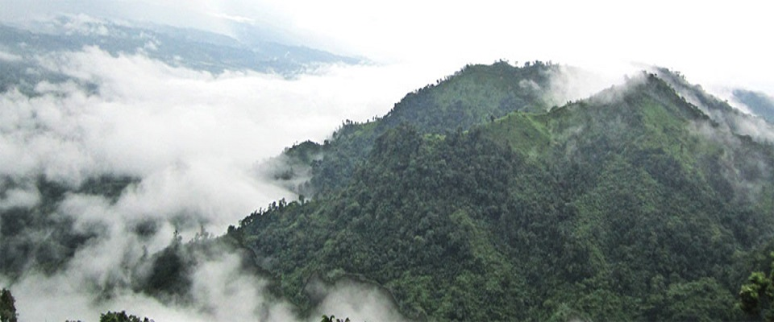

Chimbuk Hill
Chimbuk hill is the third highest mountain in Bangladesh. Chimbuk is one of the most familiar tourist spot in Bandarban. It is just 26 kilometer away from Bandarban sadar. Chimbuk hill is about 2500 feet high above sea level. The road of this area is zigzag. So if you ride in a jeep it will be charming. While your jeep is moving through the various indigenous villages, their simplicity in human gestures will compel you to think about our predecessors struggles to cope with to maintain existence. They are as simple as nature. However when you are looking down from Chimbuk, it will get you the feelings of floating over the clouds. When it is a shiny day, you can see the shades of clouds over the hills. You will also see the beauty of Chimbuk and Nilgiri. There are two government-owned rest-houses in this area. You have to confirm the reservation from the authority, if you want to stay here. There is an well managed canteen in that place so you can easily take food or snacks here. Chimbuk is 26 kilometer away from Bandarban sadar. Visitor can hire a private vehicle from Bandarban sadar or you can go there by Thanci bound bus or jeep. On the way to Chimbuk, visitor has to register his name and address to the military check post.